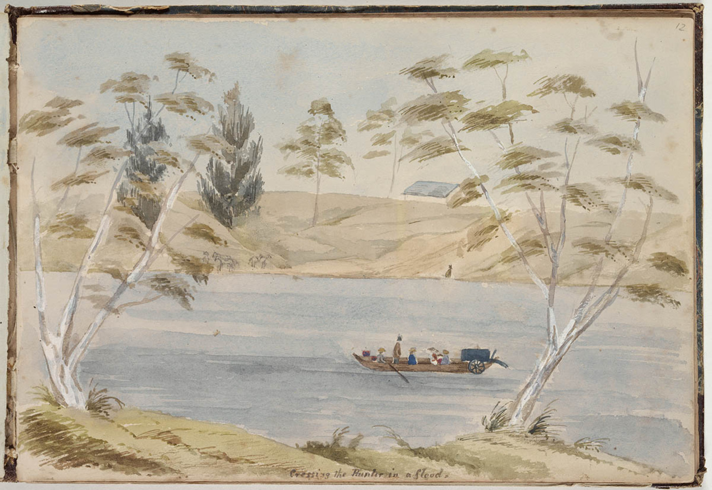

Chapter 5
The Crossing
While U-20 waited, its war diary open for its next entry, the RMS Lusitania encountered a wall of fog on the afternoon of 2 May 1915. On the bridge, Captain William Turner ordered the speed reduced from twenty-one to fifteen knots. The deck log recorded the change. It was a weather call, the kind of decision any master would make in reduced visibility. The liner continued eastward into the murk, her four funnels trailing smoke that hung in the still air above the fog bank. No one on the bridge remarked on the decision as anything unusual. It was not.
The Lusitania had departed New York at noon on 1 May 1915, clearing the harbor under the gaze of passengers who had walked past the German embassy’s printed warning in the morning papers. The notice had appeared beside Cunard’s own advertisement for the sailing. Among those who boarded were the American publisher Charles Lauriat, the art collector Sir Hugh Lane, and the socialite Theodate Pope, traveling with her companion. The manifest listed rifle cartridges among the cargo. The ship’s profile—four funnels, the distinctive Cunard lines—was known on both sides of the Atlantic. No attempt had been made to paint out the name or alter the appearance of the hull. Orders prohibited flying any flags in the war zone. This was the sum of the alterations to her peacetime protocols.
The first day at sea proceeded with the rhythms of a normal crossing. Passengers settled into cabins. The first-class dining room opened for dinner service. The ship’s newspaper, printed from wireless bulletins, carried news of the war in Europe. The German warning, for most aboard, was already receding into the category of an inconvenience faced and dismissed. The ship was too large, too fast, too famous. The Cunard line had crossed the Atlantic for decades without losing a passenger to enemy action. The assumption was not irrational. It was simply the assumption of a world that had not yet been disproved.
By the second day, the fog found the ship. Turner’s reduction to fifteen knots was logged as a matter of routine. The Lusitania was capable of sustained speeds above twenty-four knots in moderate weather. In clear conditions, she could outrun any submarine then afloat. But fog changed the calculation. A submarine on the surface could see a large liner before the liner’s lookouts could see the submarine. Reducing speed in fog was standard practice. It gave the bridge more time to react to obstacles. Turner kept the ship on her planned course, following the great circle track toward the Irish coast. The course was the same one the Lusitania had followed on her previous crossings. Cunard had used it for years.
Below the bridge, the passenger culture of the ship operated with the regularity of a small town. First-class passengers took their meals at fixed hours. The dining room seated hundreds. The lounge, the smoking room, the veranda café—all were full in their turns. Theodate Pope, an architect from Farmington, Connecticut, wrote letters and walked the promenade deck. Lauriat, the Boston bookseller, moved among the first-class accommodations with the ease of a seasoned traveler. Sir Hugh Lane, who had been involved in the founding of the Hugh Lane Municipal Gallery of Modern Art in Dublin, kept largely to himself. There were children aboard. There were families. The second and third classes had their own dining arrangements, their own deck spaces. The ship carried the full social architecture of an Edwardian Atlantic crossing.
The crew conducted drills. Lifeboat drills were standard on Cunard vessels, performed at the beginning of each voyage. The Lusitania carried enough lifeboat seats for the certificated capacity of the ship. The boats were swung out on davits. Crew members were assigned to stations. The drill was a formality. It was always a formality. No one expected to use the boats. The ship had watertight compartments, double bottoms, and a reputation for speed that amounted, in the minds of most aboard, to invulnerability. The drills were performed because regulations required them, and they were performed with the same attention to detail that a fire drill in an office building receives: enough to satisfy the inspector, not enough to save a life.
The wireless room, located on the boat deck, was the one space aboard where the war intruded with regularity. The Marconi operators received and transmitted messages throughout the crossing. Passenger traffic—personal telegrams, business communications—formed the bulk of the work. But the wireless also carried navigational warnings. The Admiralty was broadcasting notices of submarine activity in the waters around the British Isles. These messages were general in nature. They reported that submarines had been sighted in certain areas, or that vessels should keep well offshore, or that particular channels should be avoided. They did not, in most cases, specify positions, courses, or the number of enemy vessels. They were advisories, not orders. The distinction mattered.
Turner received these messages as they arrived. The wireless operator brought them to the bridge. Turner read them. He acknowledged them. What he did with them is the question that would later consume the inquiry. The Admiralty had sent Turner specific instructions before the voyage—instructions to maintain speed, to keep well offshore, to avoid headlands, to steer a mid-channel course. These instructions were clear in some respects and ambiguous in others. They told Turner what to do in general terms. They did not tell him where the submarines were. They did not tell him that the Admiralty, through its Room 40 intelligence section, knew more than the messages conveyed.
Room 40 was the Admiralty’s cryptographic unit, established in the first months of the war to intercept and decode German wireless traffic. By May 1915, Room 40 was reading German naval signals with a regularity that gave the British a significant advantage in the war at sea. The unit’s work was highly secret. Its products were distributed to a small circle of naval officers and government officials. The information it produced did not, as a rule, reach merchant captains. Turner did not know that Room 40 existed. He did not know that the Admiralty was tracking German submarine movements through intercepted and decoded signals. He did not know that the Admiralty had a picture of U-boat deployments more detailed than anything in the broadcast warnings he was receiving on the bridge.
This was the gap. On one side of it, Turner navigated by the information available to him: generalized warnings, his own experience, the ship’s planned course, and the conditions of weather and sea. On the other side, the Admiralty possessed specific intelligence about German submarine positions and intentions that was not being passed to the merchant fleet. The gap was not accidental. It was the product of a deliberate decision to protect the source of the intelligence. If the Admiralty broadcast what Room 40 knew, the Germans would realize their codes were compromised. The codes were more valuable than any single ship. This was the logic, and the logic was not unreasonable. It was also, in the event, fatal.
The crossing continued. On 3 May, the fog lifted and the ship resumed her speed. Turner ordered twenty-one knots, then twenty-two. The Lusitania moved through a gray Atlantic swell under overcast skies. The weather was typical for the North Atlantic in May. The sea was not rough, but it was not calm. The ship rolled gently. Passengers moved about their routines. Theodate Pope wrote in her journal. Lauriat read. Sir Hugh Lane walked the deck. In the third-class dining rooms, families ate together. The ship’s orchestra played in the first-class lounge. The routines of the crossing were so deeply established, so much a part of the ship’s culture, that they required no instruction. They simply happened, as they had happened on every previous crossing, because the ship was at sea and the passengers were aboard and there was nothing else to do.
Turner’s navigation during these days was conservative. He held the great circle track, the standard route for eastbound liners, which brought the ship across the Atlantic along the shortest practical distance to the Irish coast. The track was well known. It was published. Every Cunard liner followed it, and every passenger on the ship could find it on a chart in any shipping guide. The predictability of the route was, in peacetime, a virtue. Passengers knew when they would arrive. Shipping companies could schedule connections. Port authorities could prepare berths. In wartime, the predictability was something else. It meant that anyone who knew the route could calculate where the ship would be on any given day, at any given hour, within a narrow margin. The Lusitania was following a track that was, to anyone with a chart and a calendar, a schedule.
The Admiralty’s warnings continued to arrive. They were general in tone. They advised vessels to avoid the waters near Fastnet Rock, to keep clear of the south coast of Ireland, to maintain speed through the war zone. Some of these messages reached the Lusitania. Others may not have. The wireless log from the crossing is incomplete. What survives shows a pattern of generalized advisories, acknowledged by the bridge, filed without specific action.
Turner later testified that he received warnings. He also testified that he did not receive certain warnings. The record is contradictory on this point, as it is contradictory on many points about what Turner knew and when he knew it. What is clear is that the warnings he did receive did not cause him to alter his route or his schedule in any significant way. He continued on the great circle track at a speed consistent with a timely arrival at Liverpool.
The ship was scheduled to dock at the Prince’s Landing Stage in Liverpool on the afternoon of 7 May. To meet that schedule, Turner needed to arrive off the Irish coast on the morning of the seventh and enter the Irish Sea by midday. The timing was tight but not unusual. The Lusitania had made this crossing many times. Turner had commanded her on previous voyages. He knew the route. He knew the ship. He knew, or believed he knew, what the risks were. The German warning in New York had been a political gesture, in his view, not a tactical threat. The submarine menace was real but manageable. The ship was fast. The Irish Sea was broad. A submarine could not hit what it could not catch.
This was the calculation. It was a calculation based on peacetime assumptions applied to wartime conditions. The Lusitania was fast—faster than any submarine on the surface. But speed was useful only if the ship knew where the submarine was. A submarine that was positioned correctly did not need to catch the ship. It needed only to wait. And the Lusitania, following her published route on her published schedule, was moving toward a point that could be calculated in advance.
The Admiralty knew this. Room 40 was tracking U-20. The decoded signals showed that a German submarine had left port and was heading toward the British Isles. The intelligence was specific enough to indicate that the submarine was operating in the waters off the south coast of Ireland. This information was not passed to Turner. It was not passed to any merchant captain. It remained within the Admiralty’s internal distribution. The warnings that reached the Lusitania were stripped of this specificity. They told Turner to be careful. They did not tell him what to be careful of.
The ambiguity of the protocols Turner operated under was not a failure of communication. It was a design. The Admiralty had decided that the protection of Room 40’s intelligence took precedence over the operational needs of individual ships. This decision was made at a level of command far above Turner’s bridge. It was made by men who were weighing the long-term value of codebreaking against the immediate risk to merchant shipping. The calculation was not unreasonable. It was, however, a calculation that placed the Lusitania in a position where her captain could not make informed decisions about the risk he was facing. Turner was navigating with an incomplete map. He did not know it was incomplete. No one told him.
On 4 May, the Lusitania crossed the midpoint of the Atlantic. The weather improved slightly. The ship made good time. Turner increased speed to twenty-two knots, then to twenty-three. The engines responded smoothly. The ship was performing as designed. In the first-class dining room, the menu for the evening included filet mignon, pâté de foie gras, and roast duckling. The wine list ran to several pages. The orchestra played selections from Gilbert and Sullivan. In the second-class dining room, the meal was simpler but ample. In third class, the food was plain and plentiful. The ship fed her passengers as she always had. The routines of the crossing were the routines of a peacetime liner, and they were observed with the same precision.
Theodate Pope wrote about the sea. She was a woman of independent means and independent mind, an architect who had designed a school in Farmington and who traveled with a companion. She had chosen the Lusitania because it was the fastest ship available. She was not unaware of the German warning. She had seen it in the papers before boarding. She was not alarmed. The ship was too large, too fast, too well-known. The idea that a submarine would torpedo a passenger liner carrying civilians was, to most people aboard, including Theodate Pope, outside the realm of reasonable expectation. The war had rules. Passenger liners were not legitimate targets. The rules were old. They were based on centuries of maritime practice. They had not yet been broken.
Lauriat, the publisher, moved through the ship with the confidence of a man who had crossed the Atlantic many times. He had business in London. He carried papers. He was not concerned about the crossing. Sir Hugh Lane was quieter. He was a man of public prominence and private disposition, and he walked the decks alone. He had with him paintings, or so it was later reported. The details of what Lane carried and what he was thinking are not fully recorded. What is recorded is that he was aboard, and that he was, like everyone else, following the routines of the crossing.
The crew went about their duties. The stokers fed the boilers. The engineers monitored the turbines. The deck officers stood their watches. The wireless operators managed the traffic. The pursers handled the accounts. The stewards served the meals. The ship functioned as a machine, and the machine ran smoothly. There was no tension aboard. There was no alarm. The ship was crossing the Atlantic, as she had crossed it two hundred and one times before.
On 5 May, the Lusitania entered the eastern Atlantic. The sea changed color. The weather held. Turner maintained his course and speed. The ship was now two days from Liverpool, one day from the Irish coast. The Admiralty’s warnings continued to arrive, and they continued to be general. They mentioned submarines in the vicinity of the British Isles. They advised caution. They did not say where. They did not say how many. They did not say that one of them was U-20, commanded by Kapitänleutnant Walther Schwieger, and that it was positioned off the Old Head of Kinsale, on the route the Lusitania was following.
Schwieger’s patrol, unknown to Turner, was entering its final phase. U-20 had sunk two ships in the waters off the south coast of Ireland. Schwieger had been operating in the area for several days. His fuel was running low. His torpedoes were depleted. He was considering whether to remain on station or to turn for home. The decision would depend on what he encountered. The Lusitania was approaching. The ship was on time. The ship was on course. The ship was following the great circle track toward the Fastnet Rock, past the Old Head of Kinsale, into the Irish Sea, toward Liverpool. The track was published. The schedule was known. The ship was doing exactly what was expected of her.
Turner’s decisions during the crossing, examined individually, were defensible. Reducing speed in fog was standard practice. Maintaining the great circle track was standard practice. Arriving on schedule was standard practice. The ship’s drills were standard. The crew’s routines were standard. The passengers’ behavior was standard. Everything that happened aboard the Lusitania between 1 May and 6 May was consistent with the practices of a peacetime liner operating in peacetime conditions. The problem was that the conditions were not peacetime. The ship was sailing through a war zone. The zone had submarines in it. The submarines were following new rules. The new rules said that any vessel flying an enemy flag was a legitimate target. The Lusitania flew the British Red Ensign. She was a British ship. She was in the war zone. She was on a predictable track at a predictable time.
The Admiralty’s warnings, arriving on the bridge in their generalized form, were treated as advisories rather than orders. Turner read them. He acknowledged them. He continued on his course. He did not zigzag. He did not alter his route significantly. He did not increase speed to maximum. He did not take any of the evasive measures that the Admiralty’s pre-voyage instructions had suggested, because the conditions he faced did not, in his judgment, require them. The fog had cleared. The weather was fair. The sea was moderate. The ship was making good time. No visible threat presented itself. No specific warning arrived. Only the generalized advice to be careful reached the bridge, and Turner was being careful, by his own definition of what careful meant.
The definition was the problem. Turner’s definition of careful was a peacetime definition. It meant maintaining a proper lookout, reducing speed in fog, following the established route, arriving on schedule. The Admiralty’s definition of careful, as expressed in the pre-voyage instructions, was a wartime definition. It meant zigzagging, keeping well offshore, avoiding headlands, maintaining maximum speed. The two definitions were not the same. Turner operated under the first. The Admiralty expected the second. The gap between them was the gap between the ship’s culture and the war’s reality. The gap was not closed during the crossing. It was not closed because no one aboard the Lusitania recognized that it existed.
On 6 May, the Lusitania entered the war zone. The Admiralty had defined the zone as the waters around the British Isles, and the ship was now within it. The wireless traffic increased. The warnings became more frequent. They remained general. Turner acknowledged them. He continued on his course. The ship was making twenty-one knots. The Irish coast was ahead. The Fastnet Rock was the first landfall. After Fastnet, the ship would turn northeast, past the Old Head of Kinsale, into the St. George’s Channel, and on to Liverpool. The route was direct. It was the route every eastbound liner followed. It was the route that Schwieger, in U-20, was waiting on.
The passengers spent the day as they had spent every day. Theodate Pope walked the deck. Lauriat read in the lounge. Sir Hugh Lane kept to his cabin. The orchestra played. The dining rooms served dinner. The ship moved through the water at twenty-one knots, her turbines turning smoothly, her funnels trailing smoke across a gray sky. The Irish coast was less than twenty-four hours away. The passengers would see land in the morning. The crossing was nearly over. It had been, by any measure, a normal crossing. The ship had encountered fog and reduced speed. The ship had cleared weather and increased speed. The ship had followed her route and kept her schedule. The ship had done what ships do.
The normalcy was the danger. Every routine the ship observed, every schedule she kept, every course she followed, made her more predictable. The predictability was invisible to those aboard because predictability was the condition of their lives. Ships ran on schedules. Passengers expected schedules. Captains maintained schedules. The schedule was the ship’s purpose, and the schedule was being fulfilled. The Admiralty’s warnings, arriving in their stripped-down form, did not break the normalcy because they did not contain enough specific information to require a departure from routine. Turner read them as advisories. He treated them as cautionary. He continued on his course. The course was the great circle track, and the great circle track led past the Old Head of Kinsale, and off the Old Head of Kinsale, U-20 was running on the surface, low on fuel, low on torpedoes, waiting.
On 7 May 1915, the RMS Lusitania was nearing the end of her 202nd crossing, bound for Liverpool from New York, and was scheduled to dock at the Prince’s Landing Stage later that afternoon. Aboard her were 1, 264 passengers, three stowaways, and a crew of 693, totalling 1, 960 people. The ship was on time. The ship was on course. The ship was following the route she had always followed, at the speed she had always maintained, with the routines she had always observed. The Irish coast lay ahead. The submarine lay ahead. The Lusitania steamed toward both, and nothing about her approach distinguished her from any ship on any crossing in any year. That was the danger, and no one aboard could see it, because the danger was the normalcy itself.
